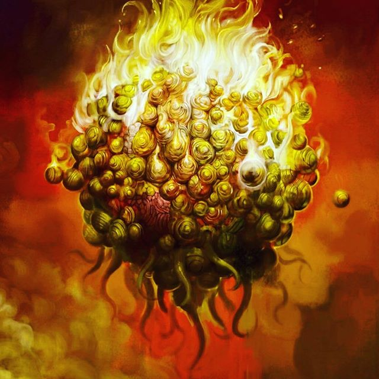

Повелитель стихии огня обитает на далекой звезде Фомальгаут, самой яркой в созвездии Южной Рыбы. Там, в двадцати семи световых голах от Земли, этот Великий Древний охраняет свое царство, пребывая в многовековом сне.
Впрочем, его возможно и пробудить — для этого достаточно произнести Заклинание. Только сначала следует дождаться, когда Фомальгаут нет восходить на небе, и тогда трижды повторить: «Пх’нглуи мгав’нафх Ктугха Фомальгаут н’гха-гхаа наф’л тагн! Йа! Ктугха!» После этого Ктугха явится и не то что рассеет какую бы то ни было непроглядную тьму, но и сожжет всё округ силами огненных созданий, которые ему служат.
Тому же кто его призвал, следует тот крыться с места — иначе придется сгореть заживо. Поэтому о Повелителе Огня и его янтарных сущностях известно крайне мало — даже безумный араб Абдул Аль-Хазред в своем «Некрономиконе» не оставил никаких указаний на его происхождение.
Имеются лишь сведения, что Ктугха — единственный, кого боится Ньярлатхотеп, Живущий-во-Тьме, а с Хастуром Невыразимым властитель огня ведет извечную вражду.
О внешнем его виде известно лишь, что Ктугха являет собой яркий оранжевый шар, покрытый уродливыми темными пятнами, которые движутся по поверхности шара и могут меняться в размерах. А отростки пламени, что выступают во все стороны, — это самом деле и есть те огненные сущности, которые делают любое его явление последним в жизни того, кто его увидел!
Придуман Августом Дерлетом, который впервые упоминает его в рассказе «Дом на Кервен-стрит» (The House on Curwen Street, 1944), а затем в «Живущем-во-Тьме» (The Dweller in Darkness, 1944), где отводит ему ключевую роль.
